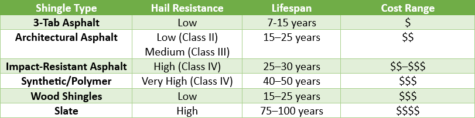

If you're a homeowner in Central Texas, choosing the right shingle roofing material is more than just a matter of style—it's about weathering harsh sun, extreme heat, and the ever-present threat of hail. Not all shingles are created equal, and understanding your options can help you make a smarter investment in your home.
Below, we break down the most common types of shingle roofing products, how they perform in Texas heat, their resistance to hail damage, and their typical lifespan.
1. Asphalt Shingles (3-Tab and Architectural)
Overview: Asphalt shingles are the most common roofing material in Texas due to their affordability and ease of installation. They come in two main styles: 3-tab (basic) and architectural (also known as dimensional or laminate shingles).
Pros:
- Affordable upfront cost
- Widely available with many colors and styles
- Easy to install and repair
- Architectural shingles offer improved curb appeal and durability
Cons:
- Shorter lifespan than premium materials
- Basic 3-tab versions are less durable and more susceptible to hail and wind
Hail Resistance:
- 3-tab shingles: Poor hail resistance; prone to cracking or granule loss from quarter-size hail
- Architectural shingles: Better resistance; some products rated Class 3 or Class 4 for impact (Class 4 is highest)
Lifespan in Texas Heat:
- 3-tab: 7-15 years (often shorter due to UV and thermal cycling)
- Architectural: 15–25 years with proper ventilation and maintenance. Architetural shingles can be classified as either Class 2 or Class 3 Hail Resistant. Learn more about the importance of proper roof ventilation here.
2. Impact-Resistant (IR) Asphalt Shingles
Overview: These are architectural shingles engineered to withstand severe weather, often meeting Class 4 impact standards (UL 2218).
Pros:
- Class 4 hail impact resistance (up to 2-inch hail)
- May qualify for insurance discounts
- Looks like standard architectural shingles but performs better
- Excellent for Texas hail zones
Cons:
- More expensive than regular asphalt shingles
- Still vulnerable to extreme heat aging over decades
Lifespan in Texas Heat: Typically 25–30 years, though performance can degrade faster without proper attic ventilation
3. Synthetic Shingles (Rubber, Polymer, or Composite)
Overview: Made from engineered materials designed to mimic slate or wood shake, synthetic shingles offer superior performance.
Pros:
- Class 4 impact rating standard on many products
- UV-resistant and performs well in hot climates
- Lightweight, yet durable
- Often made from recycled materials
Cons:
- Higher upfront cost
- Not as widely available as asphalt shingles
- Some products have limited installer availability or manufacturer support
Lifespan in Texas Heat: 40–50 years, with minimal UV degradation
4. Wood Shingles & Shakes
Overview: Traditionally made from cedar, these offer a rustic look but are not ideal for every climate.
Pros:
- Natural, beautiful aesthetic
- Good insulation properties
Cons:
- Poor fire resistance unless specially treated
- Vulnerable to rot, mold, and insects
- Susceptible to hail damage; not recommended in hail-prone areas like Texas
Hail Resistance: Generally poor, even with treated wood—splitting and denting from small hail is common
Lifespan in Texas Heat: 15–25 years, but performance suffers under intense sun and humidity
5. Slate Shingles (Natural Stone)
Overview: Slate is a premium roofing material with unmatched longevity and a classic appearance.
Pros:
- Extremely durable and fireproof
- Resistant to hail and UV degradation
- Elegant appearance
Cons:
- Very heavy, requiring reinforced roof structure
- Very expensive to purchase and install
- Repair and installation must be done by slate specialists
Hail Resistance: Typically very strong, though slate can crack under large hail depending on thickness and quality
Lifespan in Texas Heat: 75–100 years or more—UV and heat do not affect natural stone
Which Shingle Roof Is Best for Central Texas?
For homeowners in areas like Harker Heights, Killeen, or Temple, the best choice usually comes down to impact resistance and heat tolerance. Here's a quick summary:

Final Thoughts
If you're replacing your roof in Texas, prioritize impact-rated shingles with good UV resistance and strong manufacturer warranties. Even though the upfront cost may be higher, investing in more durable shingles can save you thousands in repairs and potential insurance claims from hail damage.